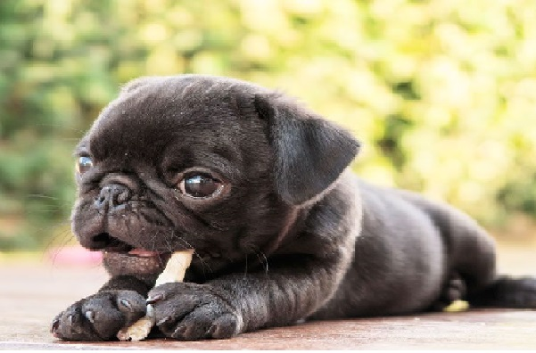
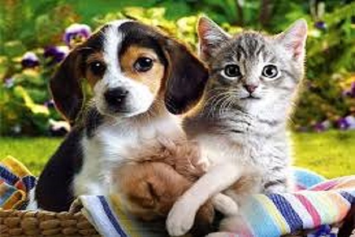
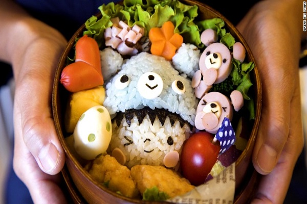

Goldens Tiernos

El golden retriever es de temperamento apacible....#Goldenoficial
Pug Adorable
Entre las características de los perros pug destaca su hocico, muy corto y achatado...#PugOficial
Perrito y gatito
A pesar de ser muy diferentes, ya que los perros son totalmente dependientes mientras que los gatos no...#Perros&ygatos
Chihuahua Cute

El chihuahua tiende a crear un estrecho vínculo con una o dos personas...#ChihuahuasOficial
Arrocito Feliz
El arroz dulce de grano corto es la variedad “más pegajosa” de arroz que se consume en Corea...#ComidasCoreanas